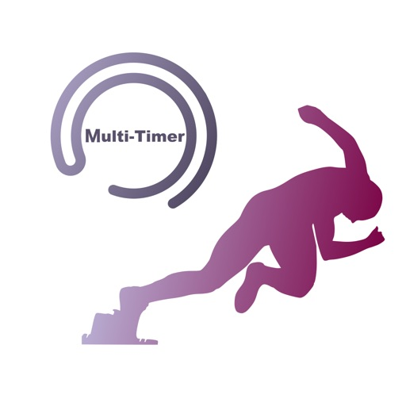
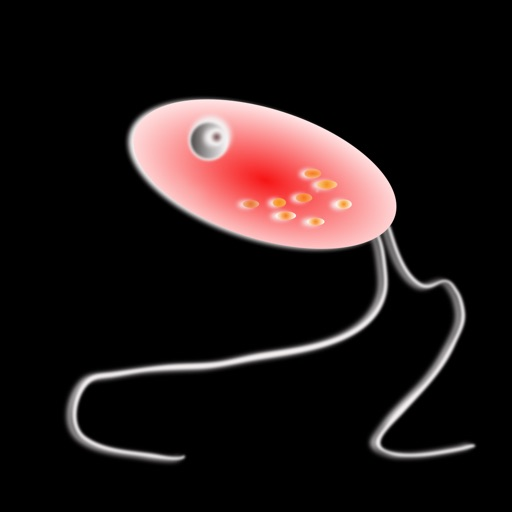

ヘルスケア / フィットネス
Multi-Timer
複数人のストップウォッチやタイマーを同時に扱える計測アプリです。部活のマネージャー、コーチ、練習会の運営など、「一人ずつ計っていたら追いつかない」場面を起点に作りました。
累計14万DL 2026年6月16日現在
ABOUT
Koki Osada として App Store でアプリを公開しています。個人開発を軸に、医療現場で感じる学習や記録の課題、ランナーとして競技現場で欲しかった道具、そして日常の小さな不便を iOS アプリに落とし込んでいます。
APPS
ヘルスケア / フィットネス
複数人のストップウォッチやタイマーを同時に扱える計測アプリです。部活のマネージャー、コーチ、練習会の運営など、「一人ずつ計っていたら追いつかない」場面を起点に作りました。
累計14万DL 2026年6月16日現在
スポーツ
陸上競技のスタート練習を手軽に行うためのアプリです。練習環境を大がかりにしなくても、号砲に近い体験を用意できるように設計しています。
累計1.7万DL 2026年6月16日現在
ユーティリティ
2台のスマホをスタート地点とゴール地点に置き、短距離走のタイム計測を支えるアプリです。写真判定と手動計時を、競技現場で扱いやすい形にまとめています。

仕事効率化
Multi-Timer の思想を複数端末の連携に広げたアプリです。現場の計測を一人の手元だけに閉じず、チームや複数デバイスで扱うための実験でもあります。
教育
英会話の練習を、より自然な対話の反復として続けるためのアプリです。言語学習を「開いて、少し話して、また戻れる」軽い体験に寄せています。

教育
感染症法指定疾患を、単なる暗記ではなく繰り返し触れながら覚えるための学習アプリです。医療学習とゲーム感覚を近づける試みとして開発しました。
STORY
ランナーとして練習や記録会に関わる中で、タイム計測やスタート練習には小さな手間が多いと感じていました。Multi-Timer、スターターキット、SprintLensは、その現場感から生まれたアプリです。
医療の勉強では、知識を覚えるだけでなく、繰り返し触れて自然に取り出せる形にすることが大切です。Pathogen Input では、学習の負荷を少しでも軽くする体験を目指しました。
個人開発では、完璧な初版よりも、使われ方を見ながら直し続けることを大事にしています。DL数の伸びやレビューは、次に直すべき場所を教えてくれる大切な信号です。